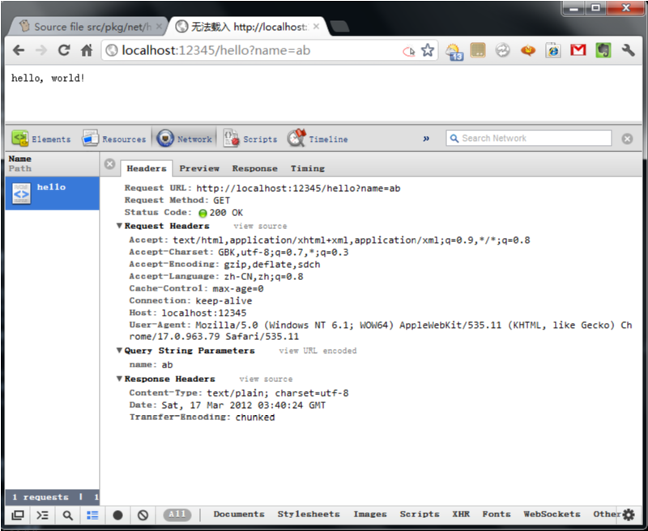

当我们在浏览器中输入一个地址，或者点击一个链接时，浏览器就会向Web服务
器发送一个Http Request请求，在 Chrome 中可以使用 右键->审查元 素->Network来查看 Http Request，需要在打开此窗口的情况下，刷新页面。另
外还可以在地址栏中输入: chrome://net-internals/来查看 http request。

一个HTTP request由三个基础部分组成：
Request Headers和一种包含和一个特定的HTTP Request请求相关的信息，比如 User-Agent。
General Headers中的内容理论上来说可以用在http request和http response中。
There are eight request methods in HTTP/1.1: GET, POST, PUT, DELETE, HEAD, TRACE, OPTIONS, and CONNECT.
A GET request traditionally contains no content and thus no entity headers.
GET /search?hl=en&q=HTTP&btnG=Google+Search HTTP/1.1
//request headers
Host: www.google.com
User-Agent: Mozilla/5.0 Galeon/1.2.0 (X11; Linux i686; U;) Gecko/20020326
Accept: text/xml,application/xml,application/xhtml+xml,text/html;q=0.9,
text/plain;q=0.8, video/x-mng,image/png,image/jpeg,image/gif;q=0.2,
text/css,*/*;q=0.1
Accept-Language: en
Accept-Encoding: gzip, deflate, compress;q=0.9
Accept-Charset: ISO-8859-1, utf-8;q=0.66, *;q=0.66
//general headers
Keep-Alive: 300
Connection: keep-alive
*request line*
POST /search HTTP/1.1
Host: www.google.com
User-Agent: Mozilla/5.0 Galeon/1.2.5 (X11; Linux i686; U;) Gecko/20020606
Accept: text/xml,application/xml,application/xhtml+xml,text/html;q=0.9,
text/plain;q=0.8,video/x-mng,image/png,image/jpeg,image/gif;q=0.2,
text/css,*/*;q=0.1
Accept-Language: en
Accept-Encoding: gzip, deflate, compress;q=0.9
Accept-Charset: ISO-8859-1, utf-8;q=0.66, *;q=0.66
Keep-Alive: 300
Connection: keep-alive
Content-Type: application/x-www-form-urlencoded
Content-Length: 31
hl=en&q=HTTP&btnG=Google+Search
http://blog.csdn.net/mspinyin/article/details/6141638
只是为了学习的目的，打印出接收的HTTP Request的内容,在浏览器中输入http://localhost:12345/hello 即可。
package main
import (
"io"
"net/http"
"fmt"
"os"
)
// 只是打印出WebRequest的Header
var G_COUNT = 0
func HelloServer(w http.ResponseWriter, req *http.Request) {
fmt.Printf("\nReceive %d request\n\n", G_COUNT)
G_COUNT++
fmt.Printf("Method: %s\n", req.Method)
fmt.Printf("URL: %s\n", req.URL)
fmt.Printf("RequestURI: %s\n", req.RequestURI )
fmt.Printf("Proto: %s\n", req.Proto)
fmt.Printf("HOST: %s\n", req.Host)
fmt.Printf("\nHttp Request Header:\n\n")
for k, vs := range req.Header{
var values string
for _, v := range vs{
values += v
values += " "
}
fmt.Printf("%s:%s\n", k, values)
}
io.WriteString(w, "hello, world!\n")
}
func main() {
http.HandleFunc("/hello", HelloServer)
err := http.ListenAndServe(":12345", nil)
if err != nil {
fmt.Printf("ERR: = %s", err)
os.Exit(-1)
}
}